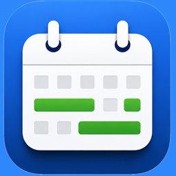

See when you're free. Share it in seconds.
Questions or feedback? Here's how to reach us.
FreeSlots never shares your event titles or details — with anyone, including us.
FreeSlots reads your existing calendars and turns them into clean, shareable free time. Pick a range, see your open slots, tap Copy, paste into Messages, WhatsApp, or Mail. FreeSlots doesn't schedule meetings, send invitations, or expose your event names to anyone — it only ever works with start times, end times, and whether you're busy.